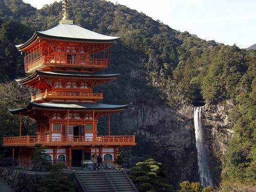

O Japão antigo e moderno é um dos maiores exportadores do mundo de cultura.
Exibe uma cultura multifacetada, com tradições milenares.
Houve uma construção de um modelo cultural diferenciado com a característica dinâmica do povo de adaptar-se à
evolução tecnológica.
Tudo isso conquistou sua popularidade em todo o mundo, e especialmente nos outros países asiáticos.
Exemplos da Cultura do país: